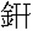

孔墨都不满于现状，要加以改革，但那第一步，是在说动人主，而那用以压服人主的家伙，则都是“天”[306]。
孔子之徒为儒，墨子之徒为侠[307]。“儒者，柔也”[308]，当然不会危险的。惟侠老实，所以墨者的末流，至于以“死”[309]为终极的目的。到后来，真老实的逐渐死完，止留下取巧的侠，汉的大侠，就已和公侯权贵相馈赠，[310]以备危急时来作护符之用了。
司马迁说：“儒以文乱法，而侠以武犯禁”[311]，“乱”之和“犯”，决不是“叛”，不过闹点小乱子而已，而况有权贵如“五侯”[312]者在。
“侠”字渐消，强盗起了，但也是侠之流，他们的旗帜是“替天行道”。他们所反对的是奸臣，不是天子，他们所打劫的是平民，不是将相。李逵劫法场[313]时，抡起板斧来排头砍去，而所砍的是看客。一部《水浒》，说得很分明：因为不反对天子，所以大军一到，便受招安，替国家打别的强盗——不“替天行道”[314]的强盗去了。终于是奴才。
满洲入关，中国渐被压服了，连有“侠气”的人，也不敢再起盗心，不敢指斥奸臣，不敢直接为天子效力，于是跟一个好官员或钦差大臣，给他保镳，替他捕盗，一部《施公案》[315]，也说得很分明，还有《彭公案》[316]，《七侠五义》[317]之流，至今没有穷尽。他们出身清白，连先前也并无坏处，虽在钦差之下，究居平民之上，对一方面固然必须听命，对别方面还是大可逞雄，安全之度增多了，奴性也跟着加足。
然而为盗要被官兵所打，捕盗也要被强盗所打，要十分安全的侠客，是觉得都不妥当的，于是有流氓。和尚喝酒他来打，男女通奸他来捉，私娼私贩他来凌辱，为的是维持风化；乡下人不懂租界章程他来欺侮，为的是看不起无知；剪发女人他来嘲骂，社会改革者他来憎恶，为的是宝爱秩序。但后面是传统的靠山，对手又都非浩荡的强敌，他就在其间横行过去。现在的小说，还没有写出这一种典型的书，惟《九尾龟》[318]中的章秋谷，以为他给妓女吃苦，是因为她要敲人们竹杠，所以给以惩罚之类的叙述，约略近之。
由现状再降下去，大概这一流人将成为文艺书中的主角了，我在等候“革命文学家”张资平[319]“氏”的近作。
注 释
[305] 本篇最初发表于1930年1月1日上海《萌芽月刊》第一卷第一期。
[306] “天” 指儒、墨两家著作中的所谓“天命”、“天意”。如《论语·季氏》：“君子有三畏：畏天命，畏大人，畏圣人之言。”《墨子·天志》：“顺天意者兼相爱，交相利，必得赏。反天意者别相恶，交相贼，必得罚。”
[307] 墨子（约前468—前376） 名翟，春秋战国之际鲁国人，墨家学派的创始者。他的言行，经他的弟子及后学辑入《墨子》一书。墨子之徒多尚武。他死后，他的学派起分化，以宋

、许行等为代表的正统派，到秦汉时演化成为游侠。[308] “儒者，柔也” 见许慎《说文解字》：“儒者，柔也，术士之称。”
[309] “死” 指游侠中流行的所谓“其言必信，其行必果，已诺必诚，不爱其躯”（见《史记·游侠列传》）的一种侠义精神。这些游侠往往为某些权贵所豢养。“士为知己者死”，是他们的道德观念。
[310] 汉代的大侠多和权贵交往勾结，如《汉书·游侠传》载，陈遵“居长安中，列侯近臣贵戚皆贵重之。牧守当之官，及郡国豪杰至京师者，莫不相因到遵门。”
[311] “儒以文乱法，而侠以武犯禁” 语出《韩非子·五蠹》。司马迁在《史记·游侠列传》中也曾引用此语。
[312] “五侯” 汉成帝（刘骜）河平二年（前27），外戚王谭、王逢时、王根、王立、王商兄弟五人同日封侯，当时称为“五侯”。据《汉书·游侠传》载，“五侯”豢养许多儒侠之士，其中大侠楼护（君卿）最受信用，是“五侯上客”。
[313] 李逵劫法场 见一百二十回本《水浒传》第四十回。
[314] 《水浒》 即《水浒传》，元末明初施耐庵作，是一部以北宋宋江领导的农民起义为题材的长篇小说。书中有宋江受朝廷招安后又去镇压方腊等农民起义军的情节。“替天行道”是宋江一贯打着的旗号。
[315] 《施公案》 清代公案小说，作者不详，共九十七回。写康熙年间施仕纶官江都知县至漕运总督时，黄天霸为他办案的故事，1838年印行。
[316] 《彭公案》 清代公案小说，署贪梦道人作，共一百回。写康熙年间一帮江湖侠客为三河知县彭鹏办案的故事，1891年印行。
[317] 《七侠五义》 原名《三侠五义》，清代侠义小说，署石玉昆述，入迷道人编订，共一百二十回。1879年印行，后经俞樾修订，1889年重印，改名《七侠五义》。前半部主要写包拯审案的故事，后半部主要写江湖侠客的活动。
[318] 《九尾龟》 张春帆作，描写妓女生活的小说，1910年出版。
[319] 张资平 参看《二心集·张资平氏的“小说学”》及其有关注。